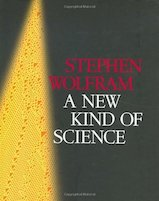
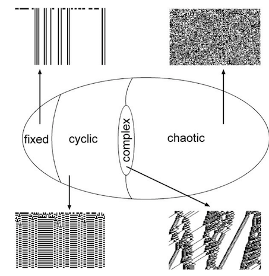

An Encounter with ℂ𝕠𝕞𝕡𝕝𝕖𝕩𝕚𝕥𝕪
It seems to be a theme of recent posts to go back over books I read more than two decades ago and realise how they formed an integral part of the way I think today, and, by realising where they came from, potentially help me to explain the ideas to others.

Another such book was Artificial Life.
I read this book when I was a teenager in the early to mid-nineties and I can still remember being awestruck by the ideas inside it. One of the ideas was the Game of Life, which I was proud to be able to reproduce on my Amstrad CPC1 but the idea that struck me most was that of 𝕔𝕠𝕞𝕡𝕝𝕖𝕩𝕚𝕥𝕪, not just in the everyday sense of very complicated2 but with a new and very special meaning: a type of behaviour between simple and chaotic where a lot of interesting stuff happens.
1 It has now become a popular programming kata, but at that time was somewhat niche to say the least.
2 It’s unfortunate that we use this heavily overloaded word. The special font is supposed to reinforce the difference between this type of complexity and the types of complexity normally associated with software such as cyclomatic complexity or essential vs accidental complexity, or simply really complicated.
The book demonstrates this most clearly with Langton’s Ant, a similar idea to the game of life but involving an “ant” moving around a grid. Based on his research, Christopher Langton, its inventor, proposed the λ parameter as a kind of life and death measure of how a simple rule based system evolves. At low values the system might be static or periodic and easy to predict. At high values the system might become chaotic, essentially noise. But at a certain point, if given the right rules and the right initial conditions, complex patterns emerge. In fact it was later proved that some of the rules that he found in the complex region, the so called edge of chaos, were exactly those that turned out to be Turing complete, that is able to reproduce any tractable computation.
Stephen Wolfram (the creator of the Mathematica) a few years later published a mighty tome on this subject called A New Kind of Science, much of which based on his own laborious experiments on a certain kind of one-dimensional cellular automata, performed during the 80s.

Wolfram classified his results into 4 separate behaviours, very similar to those rediscovered by Langton in his artificial life experiments.

Class 1 and class 2 are the fixed and cyclic phases, class 3 chaotic and noisy and class 4 the interesting complex behaviour, which again is where the Turing complete rules can be found.
This is a different way of looking at not only science, but also the way we study any non-trivial system, from which the world, as it turns out, is mostly constituted. Reductionist analysis is not always enough.
Fast-forward to today and we have learnt, and are continuing to learn, that not only we are surrounded by these kinds of systems but, in fact, we are actually part of them.
Researchers are discovering how ants, bird flocks, social networks, biological reactions and any number of other phenomena display complex behaviours through self-interactions. It turns out that we live and work within complexity everyday. Society itself sometimes appears chaotic but emergent patterns persist. Our built-in human behaviours3 seem to keep us in the sweet spot. Once again these phases4 emerge spontaneously, and complex behaviour flourishes between the predictable and the chaotic.
3 For example, Dunbar’s number, although heuristics like these must be taken with a sizeable pinch of salt.
At about the same time that Wolfram was publishing his book, Dave Snowden was creating the Cynefin Framework which draws on complexity as a means to help decision making. As we might expect, the framework has a landscape with essentially the same 4 classes (or domains), with the addition of disorder in the middle where there is simply confusion:

Each domain in this framework has a set of techniques and methods which can be applied on a contextual basis. There is a clockwise drift associated with improved methods and experience and a counter-clockwise drift when knowledge is lost.
Interesting, according to Snowden, agile organisations tend to be constantly on the transition between the complex and complicated domains, and in fact this is necessarily so: complex systems are where the interesting things tend to happen but they are also unpredictable. Agile practices pull pieces of work from the complex domain, back into the complicated domain, or even into the obvious one, so that it can be treated in a single, small step, played-out and evaluated. This is what agility means. Small teams are employed, again to reduce self-interactions and, hence, simplify the system.
On the other hand, some algorithms are complicated and remain complicated. Machine learning is an example. This is the realm of the experts who can apply learned good practice and know when those practices may or may not be suitable.
Sometimes, however, the simplest projects are situated in the obvious phase already where basic “plan-act-verify” techniques (e.g. waterfall) are perfectly adequate and systematic best practices are possible.
So, from the Game of Life to the Cynefin framework we have seen how systems theory and, in particular, complexity help give us a better understand the world around us. Reductionist and one-size-fits-all arguments, pervasive in our industry, don’t always hold. It provides us a landscape on which to map out the systems in which we find ourselves, including in our everyday lives and the projects we work on, and respond in an appropriate, non-dogmatic way.